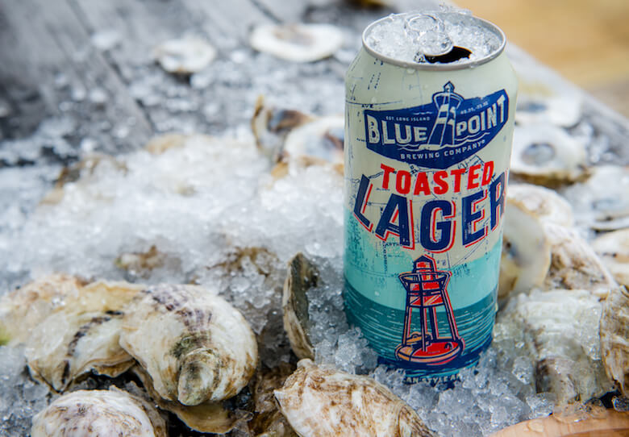

HOME
OUR PICKS
Toasted Lager
Blue Point Brewing Co.
Toasted Lager was originally named for the “toasted” characteristics of their original direct-fire brick kettle. It's brewed with a blend of six specialty malts for a flavor as rich and unique as the town it’s from. Toasted Lager’s balanced flavor of malt and hops makes for easy drinking and our special proprietary lager yeast produces an exceptional, long-lasting smooth finish.
Located in Patchogue, NY, Blue Point brews beer that stands up to New York's standards. "We know it’s good, they know it’s good, and if someone disagrees, fuck ‘em. We first and foremost brew beer that we want to drink. If there’s some leftover, we’ll sell it."
Check out their site HERE 